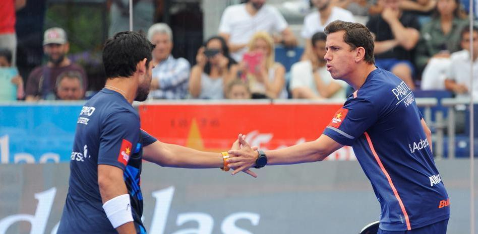
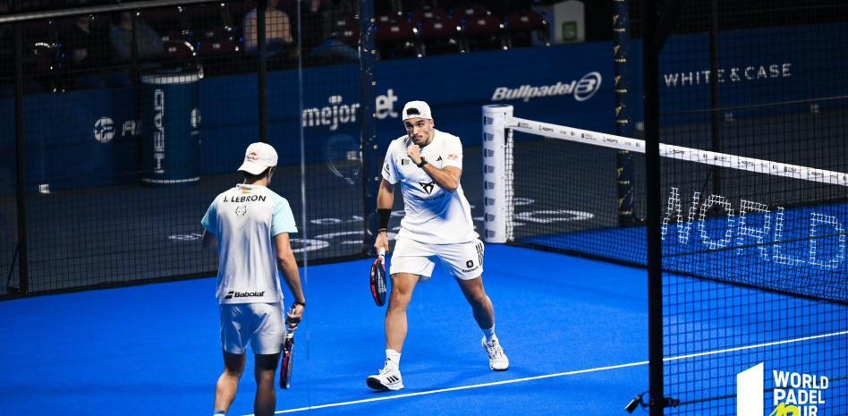
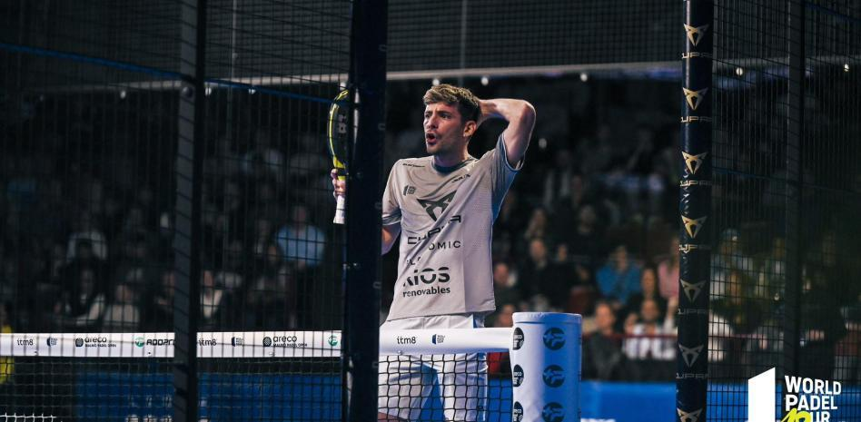
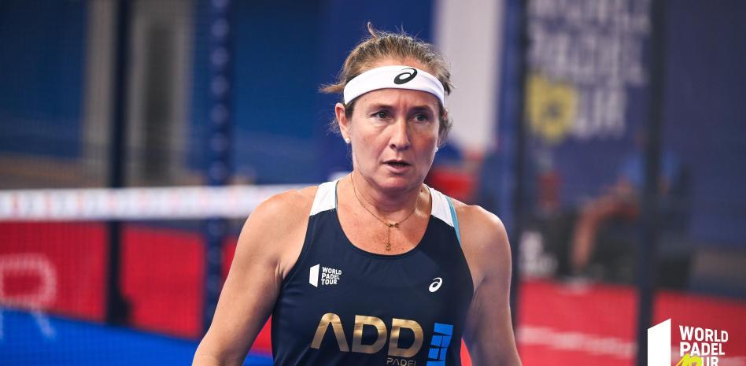
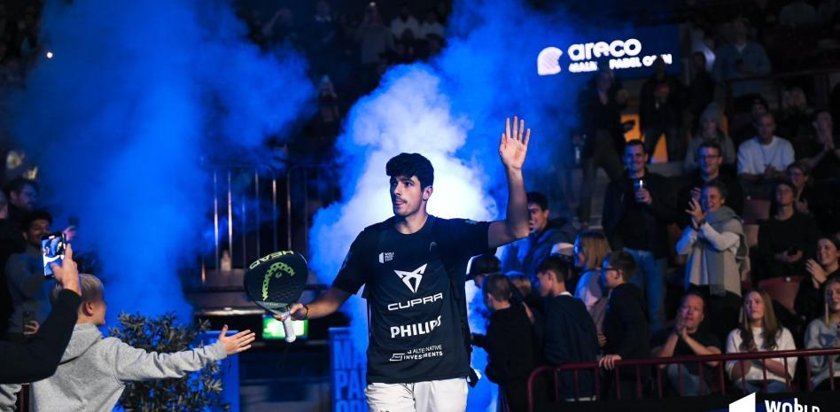

Paquito Navarro y Sanyo podrían jugar juntos en 2024Salta la primera gran noticia para la próxima temporada 2024. Paquito Navarro y Sanyo Gutiérrez jugarían juntos el próximo año en el circuito Premier Padel. Según adelanta este mismo martes 'Veinte Diez' ambos habrían ya hablado de cara al próximo año y reeditarían un proyecto que hace no tantos años aspiró a intentar asaltar el pádel durante dos temporadas seguidas. |
|
|---|---|
El renacer tardío de Galán y Lebrón:datos de números unoLa pareja española, contabilizando únicamente los torneos desde el regreso de Lebrón en Málaga, lideraría el ranking de World Padel Tour. Es una obviedad, a estas alturas, destacar el excelente momento de forma de Juan Lebrón y Alejandro Galán. Los campeones de este pasado Areco Malmö Padel Open 1000 han logrado su cuarto título de la temporada |
|
Los Superpibes pagan la resurrección de Galán y LebrónLa dupla argentina ha dejado de ganar 1.040 puntos en enfrentamientos directos con los españoles frente a los 880 puntos que se les han escapado a Tapia y Coello |
|

Incombustible Carol: la malagueña confirma su continuidad en 2024La ex número uno cumplirá 48 años la próxima temporada. La jugadora, que cumplirá 48 años de edad el próximo mes de febrero, sumará una temporada más en activo en la élite del pádel y quedará, por tanto, a un solo año de cumplir su trigésimo ejercicio desde que comenzó en este deporte. |
|
La autocrítica de Coello:“Lo bueno de este equipo es que pelea junto y unido de principio a fin” El vallisoletano reacciona a la contundente derrota de semifinales ante Galán y Lebrón |
|